Python — Fast Track
Quick Navigation
- Python Basics
- Collections & Variables
- Conditional Loops
- Functions
- Error Handling & Debugging
- Object-Oriented Programming
- File I/O & Working with Files
- Modules & Package Management
- NumPy Essentials
- Pandas Fundamentals
- Data Visualization
Python Basics
Grid Comparison
| Concept | Syntax | Example | Use Case |
|---|---|---|---|
| Variables | name = value |
x = 10 |
Store data |
| Strings | "text" or 'text' |
name = "Alice" |
Text data |
| Numbers | int, float |
age = 25, price = 9.99 |
Numeric data |
| Comments | # comment |
# This is a comment |
Code documentation |
Flashcard (SVG)
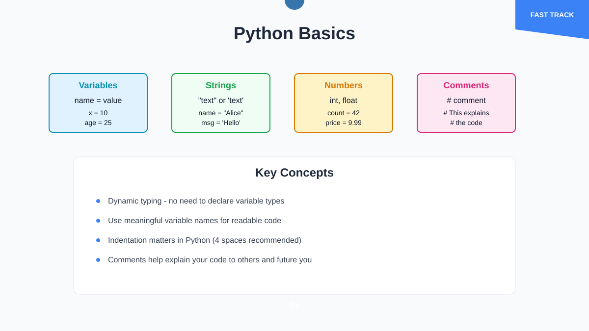
Key Takeaways
- Python is dynamically typed - no need to declare variable types
- Use meaningful variable names for readable code
- Indentation matters in Python (4 spaces recommended)
- Comments help explain your code to others and future you
Error Handling & Debugging
Grid Comparison
| Error Type | Syntax | Example | When to Use |
|---|---|---|---|
| try/except | try: code except: handle |
try: int("abc") except ValueError: print("Invalid") |
Handle expected errors |
| try/except/else | try: code except: handle else: success |
try: file = open("data.txt") except: print("Error") else: process(file) |
Actions when no errors |
| try/finally | try: code finally: cleanup |
try: connect() finally: disconnect() |
Ensure cleanup always runs |
| Specific Exceptions | except ValueError: |
except (ValueError, TypeError): |
Handle specific error types |
Flashcard (SVG)
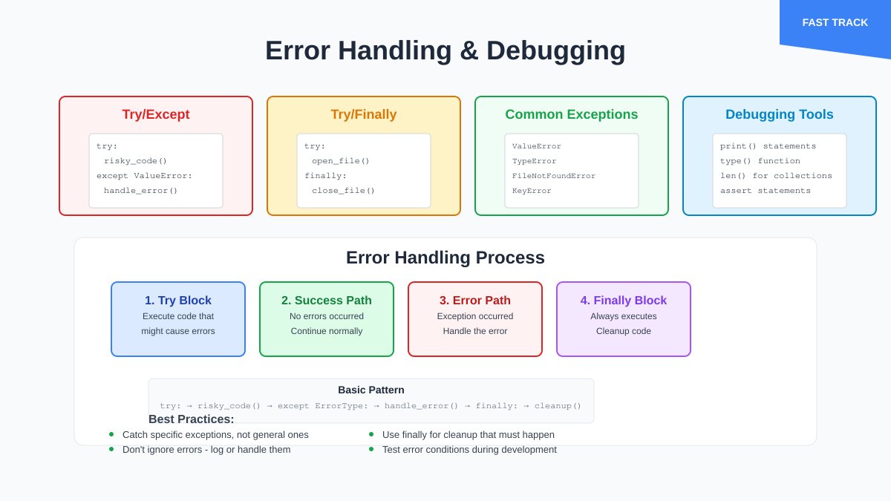
Key Takeaways
- Use try/except to handle errors gracefully instead of letting programs crash
- Catch specific exceptions rather than using bare except statements
- Use finally blocks for cleanup code that must always run
- Common exceptions: ValueError, TypeError, FileNotFoundError, KeyError
Object-Oriented Programming
Grid Comparison
| Concept | Syntax | Example | Purpose |
|---|---|---|---|
| Class Definition | class ClassName: |
class Car: |
Blueprint for objects |
| Constructor | def __init__(self, params): |
def __init__(self, brand, model): |
Initialize object attributes |
| Instance Method | def method_name(self): |
def start_engine(self): |
Actions objects can perform |
| Inheritance | class Child(Parent): |
class ElectricCar(Car): |
Extend existing classes |
Flashcard (SVG)
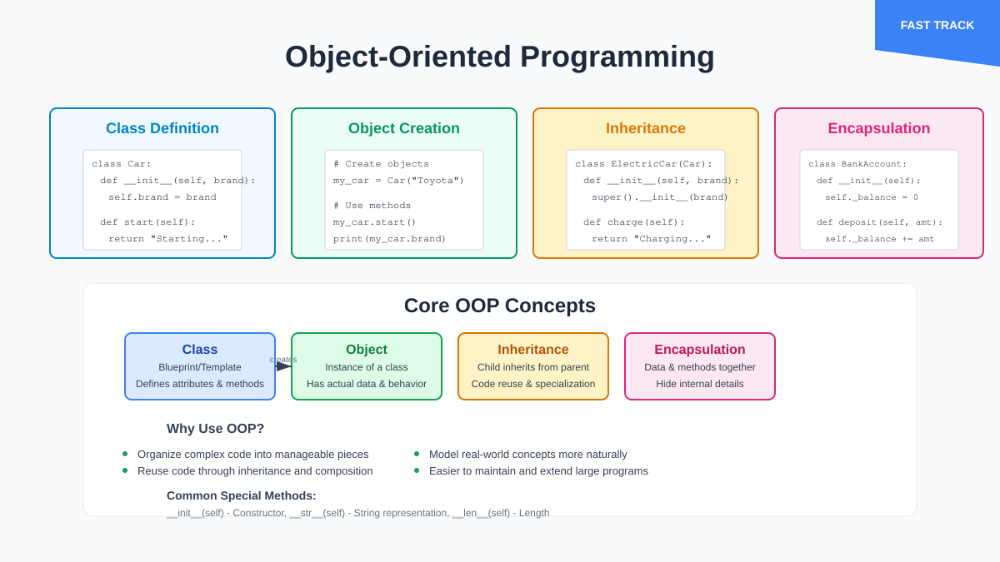
Key Takeaways
- Classes are blueprints, objects are instances created from classes
- Use init method to set up object attributes when created
- self parameter refers to the current object instance
- Inheritance allows code reuse and creating specialized versions of classes
File I/O & Working with Files
Grid Comparison
| Operation | Syntax | Example | Use Case |
|---|---|---|---|
| Read File | open("file.txt", "r") |
with open("data.txt", "r") as f: content = f.read() |
Load file contents |
| Write File | open("file.txt", "w") |
with open("output.txt", "w") as f: f.write("Hello") |
Save data to file |
| Append File | open("file.txt", "a") |
with open("log.txt", "a") as f: f.write("New entry") |
Add to existing file |
| CSV Handling | import csv |
with open("data.csv") as f: reader = csv.reader(f) |
Work with spreadsheet data |
Flashcard (SVG)
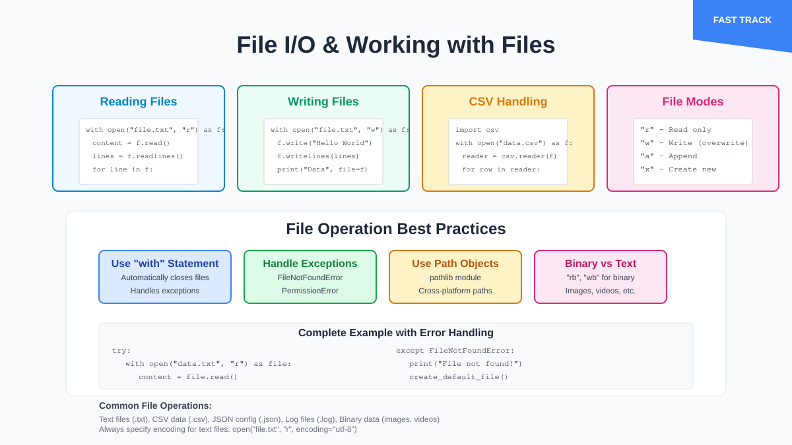
Key Takeaways
- Always use "with" statement for file operations to ensure proper closing
- Different modes: "r" for reading, "w" for writing, "a" for appending
- CSV module makes working with spreadsheet data much easier
- Handle file exceptions to deal with missing or inaccessible files
Modules & Package Management
Grid Comparison
| Concept | Syntax | Example | Purpose |
|---|---|---|---|
| Import Module | import module_name |
import math |
Use built-in or external code |
| Import Specific | from module import function |
from datetime import datetime |
Import only what you need |
| Install Package | pip install package_name |
pip install requests |
Add external libraries |
| Create Module | Save .py file | mymodule.py then import mymodule |
Organize your own code |
Flashcard (SVG)
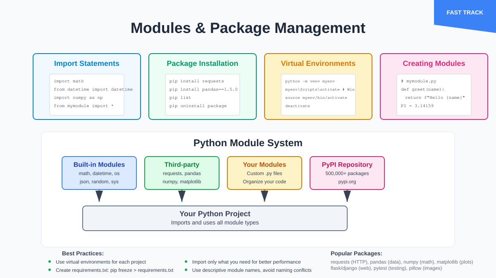
Key Takeaways
- Modules help organize code and avoid repeating yourself
- pip is Python's package installer for external libraries
- Use virtual environments to manage different project dependencies
- Standard library has many useful modules built-in (math, datetime, os, etc.)
Collections & Variables
Grid Comparison
| Collection Type | Syntax | Mutable | Ordered | Example |
|---|---|---|---|---|
| List | [item1, item2] |
Yes | Yes | fruits = ["apple", "banana"] |
| Tuple | (item1, item2) |
No | Yes | coordinates = (10, 20) |
| Dictionary | {key: value} |
Yes | Yes (3.7+) | person = {"name": "Alice", "age": 30} |
| Set | {item1, item2} |
Yes | No | unique_nums = {1, 2, 3} |
Flashcard (SVG)
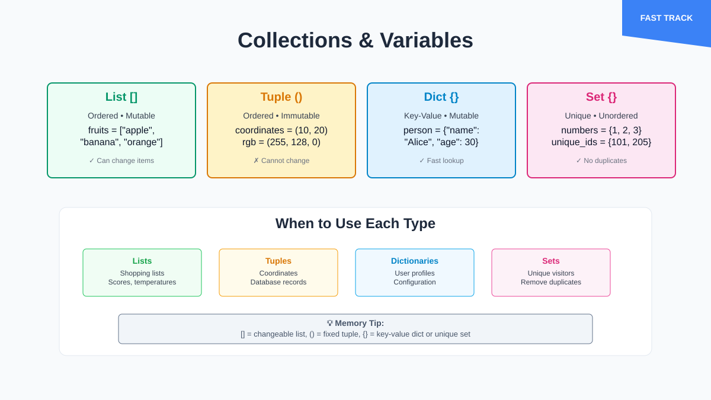
Key Takeaways
- Lists are most common for ordered, changeable collections
- Dictionaries map keys to values - perfect for structured data
- Tuples are immutable - use for data that shouldn't change
- Sets automatically handle uniqueness - no duplicates
Conditional Loops
Grid Comparison
| Loop Type | Syntax | Best For | Example |
|---|---|---|---|
| For Loop | for item in sequence: |
Known iterations | for i in range(5): |
| While Loop | while condition: |
Unknown iterations | while x < 10: |
| If Statement | if condition: |
Decision making | if age >= 18: |
| List Comprehension | [expr for item in list] |
Creating new lists | [x*2 for x in numbers] |
Flashcard (SVG)
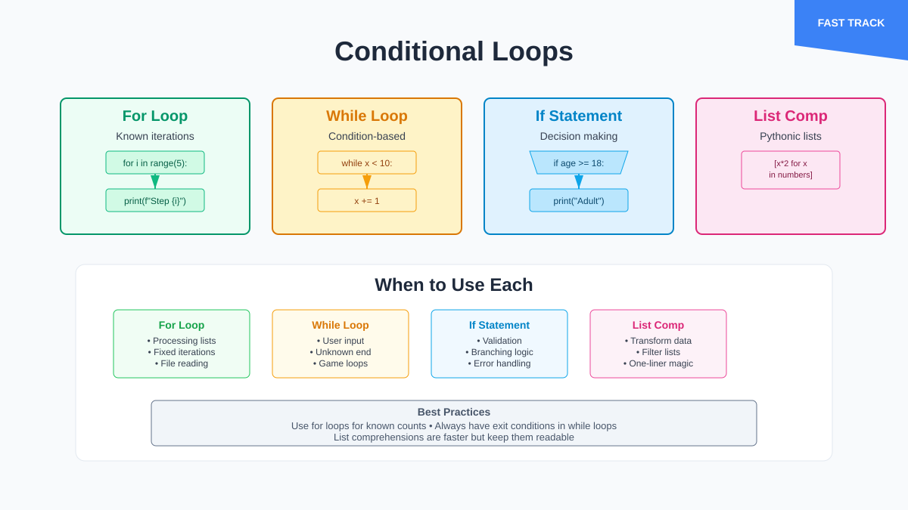
Key Takeaways
- Use
forloops when you know how many times to iterate - Use
whileloops when the condition determines when to stop - List comprehensions are Pythonic and often faster than regular loops
- Always ensure while loops have a way to exit to avoid infinite loops
Functions
Grid Comparison
| Function Feature | Syntax | Example | Purpose |
|---|---|---|---|
| Basic Function | def name(): |
def greet(): |
Reusable code blocks |
| With Parameters | def name(param): |
def greet(name): |
Accept input |
| Return Value | return value |
return name.upper() |
Send result back |
| Default Parameters | def name(param="default"): |
def greet(name="World"): |
Optional arguments |
Flashcard (SVG)
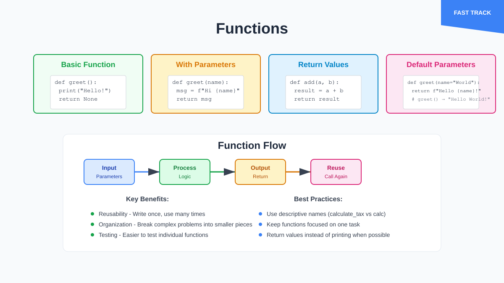
Key Takeaways
- Functions promote code reusability and organization
- Use descriptive function names that explain what they do
- Return values to make functions more flexible and testable
- Default parameters make functions more user-friendly
NumPy Essentials
Grid Comparison
| Operation | NumPy | Pure Python | Performance |
|---|---|---|---|
| Array Creation | np.array([1,2,3]) |
[1,2,3] |
~50x faster |
| Math Operations | arr * 2 |
[x*2 for x in list] |
~100x faster |
| Array Shape | arr.shape |
len(list) |
Multidimensional |
| Broadcasting | arr + 5 |
Manual loops | Automatic |
Flashcard (SVG)
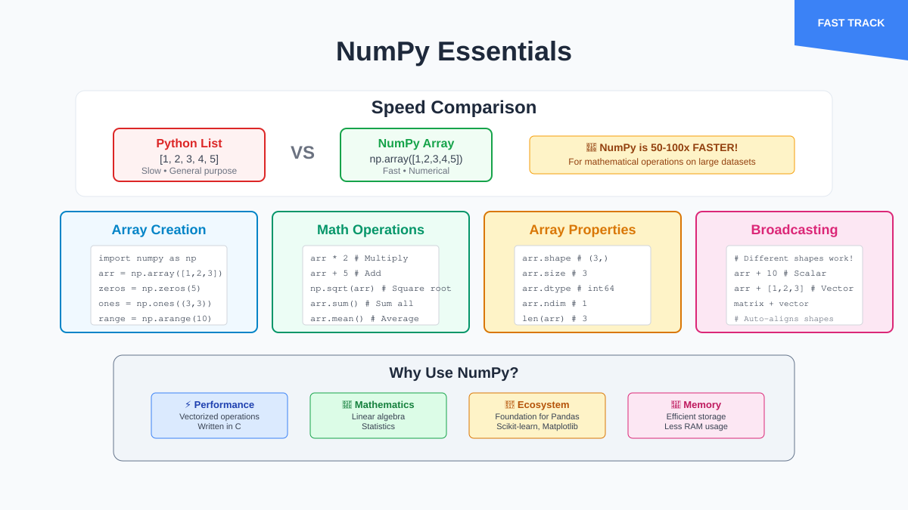
Key Takeaways
- NumPy arrays are much faster than Python lists for numerical operations
- Broadcasting allows operations between arrays of different shapes
- Use NumPy for mathematical computations, scientific computing
- Foundation for most data science libraries in Python
Pandas Fundamentals
Grid Comparison
| Data Structure | Purpose | Creation | Key Methods |
|---|---|---|---|
| Series | 1D labeled array | pd.Series([1,2,3]) |
.head(), .describe() |
| DataFrame | 2D labeled data | pd.DataFrame(data) |
.info(), .groupby() |
| Index | Row labels | Auto or custom | .loc[], .iloc[] |
| Columns | Column labels | From dict keys | .select_dtypes() |
Flashcard (SVG)
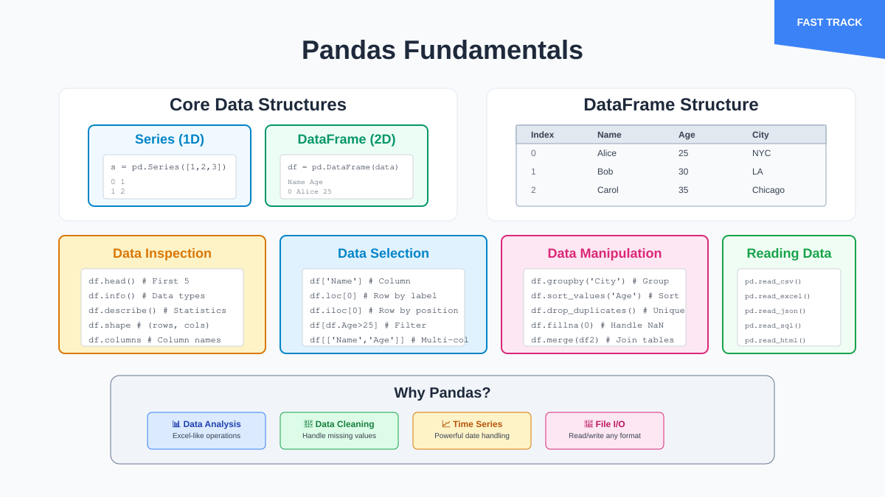
Key Takeaways
- DataFrames are like Excel spreadsheets but more powerful
- Use
.loc[]for label-based indexing,.iloc[]for position-based - Pandas handles missing data gracefully with NaN values
- Built-in functions for reading CSV, Excel, JSON, and databases
Data Visualization
Grid Comparison
| Library | Strengths | Syntax Style | Best For |
|---|---|---|---|
| Matplotlib | Flexibility, control | plt.plot(x, y) |
Static plots, publications |
| Seaborn | Statistical plots | sns.scatterplot(data=df) |
Statistical analysis |
| Plotly | Interactivity | px.scatter(df, x, y) |
Interactive dashboards |
| Pandas | Quick & easy | df.plot() |
Data exploration |
Flashcard (SVG)
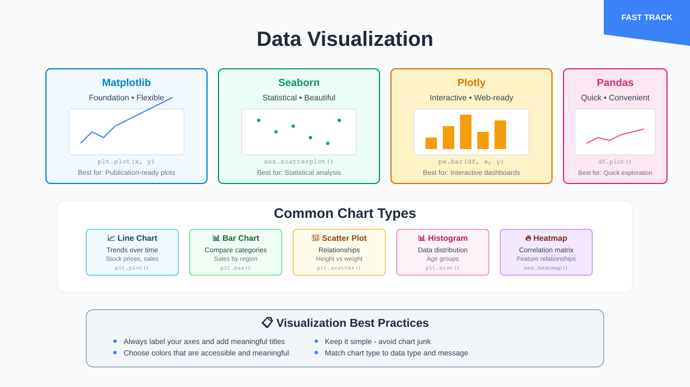
Key Takeaways
- Matplotlib is the foundation - other libraries build on it
- Seaborn makes beautiful statistical plots with less code
- Plotly creates interactive plots that work in web browsers
- Always label your axes and add titles for clarity
References & Further Reading
- Python Official Tutorial
- Python Error Handling
- Python Classes Tutorial
- Working with Files in Python
- Python Module System
- NumPy Quickstart
- Pandas User Guide
- Matplotlib Tutorials
- Seaborn Tutorial
- Plotly Python Documentation
- Real Python Tutorials
- W3Schools Python
- Python Package Index (PyPI)
- Python Virtual Environments Guide